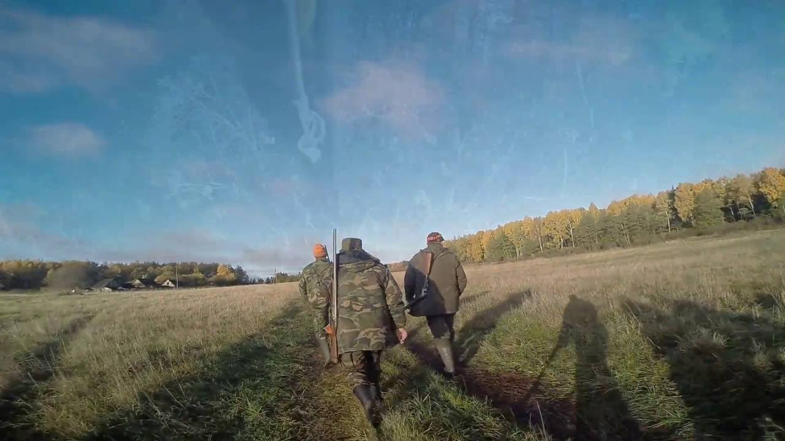
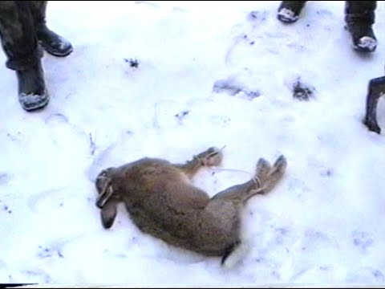

Prasideda akcija „Medžioklė“ | Miske.lt
2020.10.29 07:08

Pradžia Naujienos Straipsniai Vaizdo įrašai Kalendorius Kita Informacija Klubų ribos Medžiojame Naudinga Receptai Kontaktai Autoriams Reklama Išvaizda Šviesi Tamsi 5 349 Naujienos 2020.09.16 2020.09.16
Prasideda akcija „Medžioklė“
Vakar Aplinkos apsaugos departamentas tauriųjų elnių ir briedžių apsaugai stiprinti intensyviausiu jų rujos metu pradėjo akciją „Medžioklė“. Mat rujodami šie žvėrys įnirtingai ieško naujų teritorijų, patelių, varžovų, todėl nėra tokie budrūs ir gali tapti lengvu brakonierių grobiu.
Aplinkosaugos pareigūnai visą mėnesį – iki spalio 15 d. organizuos reidus, dažniau tikrins pirminio žvėrių apdorojimo aikšteles, stabdys, ypač tamsiu paros metu, pažeidimais įtariamų asmenų transporto priemones.
Aplinkosaugininkai primena vairuotojams, kad tauriųjų elnių ir briedžių rujos metu jie būtų atsargūs. Ypač atidiems reikėtų būti keliuose netoli miškų ir ten, kur pastatyti įspėjamieji ženklai, kad per kelią gali judėti laukiniai gyvūnai, – rujos laikotarpiu didėja rizika, kad jie išbėgs į važiuojamąją kelio dalį.
ĮVERTINKITE ŠĮ STRAIPSNĮ
Siųsti
Įvertinimas: 4 / 5. Balsavo: 35
Būkite pirmas ir įvertinkite šį straipsnį!
- Superkompaktiškas termovizorius AXION | Medžioklė
- Ančių Medžioklė - Kur pavalgyti? Maisto apžvalgos, kritika ...
- Filmai internetu, filmai online, nemokami filmai
- Medžioklė / The Hunt (2020) online
- Medžioklė - Ūkininko patarėjas
- Prasideda akcija „Medžioklė“ | Miske.lt
- Medžioklė / The Hunt 2020 online lietuvių kalba
- Medžioklė / The Hunt (2020) » Filmai ir serialai online ...
- Medžioklė - vertimai, sinonimai, gramatika, statistika ...
- Žiūrėti Raudonojo Spalio Medžioklė Online nemokamai
- Superkompaktiškas termovizorius AXION | Medžioklė
Medžioklė / The Hunt (2012) BDRip. Kraujas ir šokoladas. Dramos, Romantiniai, Fantastiniai, Siaubo, Filmai. 2007. 1 val 38 min. Kraujas ir šokoladas / Blood and Chocolate (2007) DVDRip.
- Ančių Medžioklė - Kur pavalgyti? Maisto apžvalgos, kritika ...
GERAS FILMAS Medžioklė / The Hunt 2020 online lietuvių kalba nemokamai HD kokybė. Žiūrėkite naujausią filmą NEMOKAMAI. Vienas žiurimiausių filmų Lietuvoje.
- Filmai internetu, filmai online, nemokami filmai
Gero termovizoriaus reikėtų kiekvienam medžiotojui, norinčiam medžioti ne tik sėkmingai, bet ir etiškai. Jis padeda prieš šūvį įsitikinti, ar prie viliojimo vietos priėjusios šernės aukštoje žolėje neseka jaunikliai, kiek apskritai bandoje šernų, kuris didesnis, kuris mažesnis. Su Axion gyvūną galima įžiūrėti ir per gana tankius krūmus, tad galima pasirengti jo ...
- Medžioklė / The Hunt (2020) online
Filmas sukurtas pagal 1984 m. JAV išleistą (ir išverstą į lietuvių kalbą) Tomo Clancy knygą „Raudonojo spalio“ medžioklė“, kuri tapo bestseleriu. Romanas ir filmas sukurti pagal tikrus įvykius.
- Medžioklė - Ūkininko patarėjas
Ančių Medžioklė - maisto apžvalgos, vertinimai ir rekomendacijos. Kažkaip pagalvojau, kad reikėtų prisiminti praėjusį šeštadienį praūžusią We Will Grill fiestą.
- Prasideda akcija „Medžioklė“ | Miske.lt
Prasideda akcija „Medžioklė“ Vakar Aplinkos apsaugos departamentas tauriųjų elnių ir briedžių apsaugai stiprinti intensyviausiu jų rujos metu pradėjo akciją „Medžioklė“. Mat rujodami šie žvėrys įnirtingai ieško naujų teritorijų, patelių, varžovų, todėl nėra tokie budrūs ir gali tapti lengvu brakonierių grobiu.
- Medžioklė / The Hunt 2020 online lietuvių kalba
Miske.lt naujienos medžiotojams, straipsniai apie medžioklę, medžioklės vaizdo įrašai, medžioklės kalendorius, medžioklės įstatymai ir komentarai.
- Medžioklė / The Hunt (2020) » Filmai ir serialai online ...
Vaizdo įrašas pilno filmo "Medžioklė (2020)" įsijungia geroje kokybėje FULL HD 720 ir 1080 nemokamai, be registracijos. Žiūrėti Treileris. Filmas prasidės po trumpos reklamos * Brangūs lankytojai, reklama leistuve nuo mūsų nepriklauso. Atsiprašome...
- Medžioklė - vertimai, sinonimai, gramatika, statistika ...
Filmai internetu ir filmai online. Naujausi serialai, parduotas gyvenimas online, suzeisti pauksciai online
- Žiūrėti Raudonojo Spalio Medžioklė Online nemokamai
Medžioklės reikmenys medžioklė, žvejyba. X. Dėl geresnės Skelbiu.lt paslaugų kokybės naudojame slapukus (angl. cookies). Naršydami toliau, patvirtinate, kad sutinkate su slapukais. Tai bet kada galėsite atšaukti, pakeisdami nustatymus. Skelbiu.lt slapukų politika.
Medžioklė / The Hunt (2012) BDRip. Kraujas ir šokoladas. Dramos, Romantiniai, Fantastiniai, Siaubo, Filmai. 2007. 1 val 38 min. Kraujas ir šokoladas / Blood and Chocolate (2007) DVDRip.
GERAS FILMAS Medžioklė / The Hunt 2020 online lietuvių kalba nemokamai HD kokybė. Žiūrėkite naujausią filmą NEMOKAMAI. Vienas žiurimiausių filmų Lietuvoje.
Gero termovizoriaus reikėtų kiekvienam medžiotojui, norinčiam medžioti ne tik sėkmingai, bet ir etiškai. Jis padeda prieš šūvį įsitikinti, ar prie viliojimo vietos priėjusios šernės aukštoje žolėje neseka jaunikliai, kiek apskritai bandoje šernų, kuris didesnis, kuris mažesnis. Su Axion gyvūną galima įžiūrėti ir per gana tankius krūmus, tad galima pasirengti jo ...
Filmas sukurtas pagal 1984 m. JAV išleistą (ir išverstą į lietuvių kalbą) Tomo Clancy knygą „Raudonojo spalio“ medžioklė“, kuri tapo bestseleriu. Romanas ir filmas sukurti pagal tikrus įvykius.
Ančių Medžioklė - maisto apžvalgos, vertinimai ir rekomendacijos. Kažkaip pagalvojau, kad reikėtų prisiminti praėjusį šeštadienį praūžusią We Will Grill fiestą.
Prasideda akcija „Medžioklė“ Vakar Aplinkos apsaugos departamentas tauriųjų elnių ir briedžių apsaugai stiprinti intensyviausiu jų rujos metu pradėjo akciją „Medžioklė“. Mat rujodami šie žvėrys įnirtingai ieško naujų teritorijų, patelių, varžovų, todėl nėra tokie budrūs ir gali tapti lengvu brakonierių grobiu.
Miske.lt naujienos medžiotojams, straipsniai apie medžioklę, medžioklės vaizdo įrašai, medžioklės kalendorius, medžioklės įstatymai ir komentarai.
Vaizdo įrašas pilno filmo "Medžioklė (2020)" įsijungia geroje kokybėje FULL HD 720 ir 1080 nemokamai, be registracijos. Žiūrėti Treileris. Filmas prasidės po trumpos reklamos * Brangūs lankytojai, reklama leistuve nuo mūsų nepriklauso. Atsiprašome...
Filmai internetu ir filmai online. Naujausi serialai, parduotas gyvenimas online, suzeisti pauksciai online
Medžioklės reikmenys medžioklė, žvejyba. X. Dėl geresnės Skelbiu.lt paslaugų kokybės naudojame slapukus (angl. cookies). Naršydami toliau, patvirtinate, kad sutinkate su slapukais. Tai bet kada galėsite atšaukti, pakeisdami nustatymus. Skelbiu.lt slapukų politika.
 